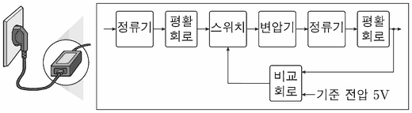

어댑터
지문을 먼저 읽고, 이해가 막히는 문단에서 ‘그림으로 보기’를 누르세요. 그림은 문단을 따라 바뀝니다.
1문단가정에 공급되는 전원은 220V, 주파수가 60Hz인 교류 전원으로 초당 60번 크기와 방향이 규칙적으로 바뀐다. 그러나 우리가 쓰는 소형 전기 기기들은 5V에서 12V 정도의 직류 전원을 공급해야 작동한다. 따라서 220V의 높은 교류 전압을 낮은 직류 전압으로 바꾸어 주는 어댑터를 사용해야 한다.
2문단어댑터에는 선형 방식과 스위칭 방식이 있다. ㉠선형 방식은 변압기, 정류기, 평활 회로, 정전압 소자로 구성된다. 변압기는 입력되는 전압에 변화가 생기면 자기장이 유도되어 출력 측에 발생하는 교류 전압을 높이거나 낮출 수 있는 장치이다. 전원이 공급된 후, 변압기를 통과하면서 크게 낮아진 교류 전압은 정류기에서 전류를 한쪽 방향으로 흐르게 하는 전압으로 바뀐다. 그런데 이 전압은 변동이 크기 때문에 이를 억제하기 위해 평활 회로가 사용된다. 평활 회로에는 에너지 저장 소자가 있어, 전압이 높을 때 일시적으로 전기 에너지를 저장했다가 전압이 낮아질 때는 에너지를 방출하여 전압 변동을 억제한다. 어댑터에서 출력되는 전압이 항상 일정하게 유지되지 않으면 이를 사용하는 전기 제품이 오작동을 일으킬 수 있다. 그래서 출력 전압이 고정된 정전압 소자를 이용하여 안정화된 직류 전원을 만든다. 예를 들어 5V 정전압 소자에 출력 전압보다 높은 9V 전압이 들어오면, 4V에 해당하는 전력을 열로 소모하고 필요한 5V만 출력한다.
3문단선형 방식은 구성이 간단하지만, 전력 손실이 많고 열 발생이 과도하면 회로가 파손될 수 있다. 또한 일반적으로 입력 전압의 주파수가 낮을수록 변압기의 크기가 커서 주파수가 낮으면 어댑터의 크기가 클 수밖에 없다. 현재는 선형 방식의 단점을 해결하고 소형화, 전력의 고효율화를 이룬 스위칭 방식이 주로 사용되지만, 선형 방식도 특별한 경우에 사용되고 있다.
4문단㉡스위칭 방식은 선형 방식과 동일한 기능의 전기 소자들이 사용되며, 정전압 소자를 사용하는 대신 스위치를 제어하여 원하는 전압을 만들어 낸다. 먼저 220V 교류 전압이 정류기와 평활 회로를 거치며 변동이 적은 전압으로 바뀐다. 이 전압은 변화가 적어 변압기에 입력되어도 변압기의 출력 측에 전압이 거의 발생하지 않는다. 이 때문에 반도체로 만들어진 스위치를 사용하여 이 전압을 변화가 심한 전압으로 바꾼다. 스위치가 ‘온’인 동안은 입출력의 전압이 같아지고, ‘오프’인 동안은 전압이 발생하지 않는데, 스위치는 대략 10～500kHz 사이의 주파수로 온과 오프를 주기적으로 반복한다. 이때 한 주기 내에서 온 되어 있는 시간의 비율을 나타내는 온오프비에 따라 변압기에서 출력되는 전압이 달라진다. 그 비율이 커지면 출력 전압이 높아지고, 비율이 작아지면 전압이 낮아진다. 변압기에서 출력된 교류 전압은 다시 정류기와 평활 회로를 거쳐 어댑터의 최종 출력 전압이 된다. 이때 안정화된 직류 전원을 만들기 위해 비교 회로를 이용하여 최종 출력 전압이 기준 전압과 같아지도록 한다. 비교 회로는 최종 출력 전압을 기준 전압과 비교하여 스위치의 온․오프를 조정하는 신호를 생성한다. 스위칭 방식은 열로 소모되는 전력이 적지만, 스위치의 온․오프에 의해 생긴 전압 변동이 온․오프 신호와 동일한 주파수의 노이즈로 남아 최종 출력 전압과 함께 출력된다.
윗글을 바탕으로 <보기>를 이해한 내용으로 적절하지 않은 것은? [3점]
스위칭 방식의 어떤 어댑터에 220V, 60Hz의 전원이 공급되고 있고, 온․오프 신호의 주파수는 100kHz이며 기준 전압이 5V 이다. 어떤 순간에 최종 출력 전압이 4.5V이고 이때 비교 회로 출력의 온오프비가 10%인 것으로 측정되었다. 전원 입력에서 변압기의 입력까지를 일차 측이라 하고, 변압기의 출력에서 어댑터의 최종 출력까지를 이차 측이라고 한다.

그림: 정류기, 평활 회로, 스위치, 변압기, 정류기, 평활 회로가 차례로 이어지고, 최종 출력이 비교 회로로 돌아가 기준 전압 5V와 비교된 뒤 스위치를 조정하는 구성도">